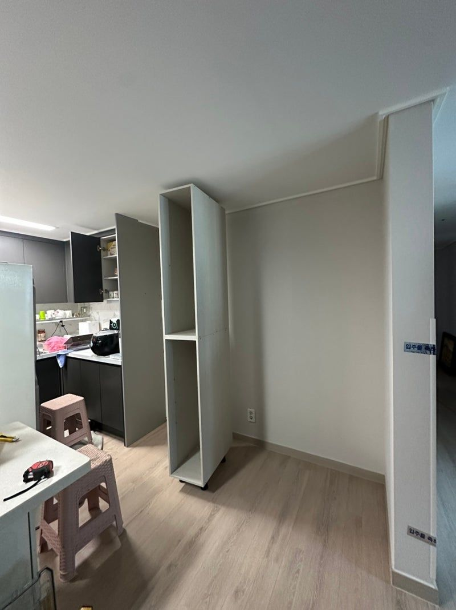
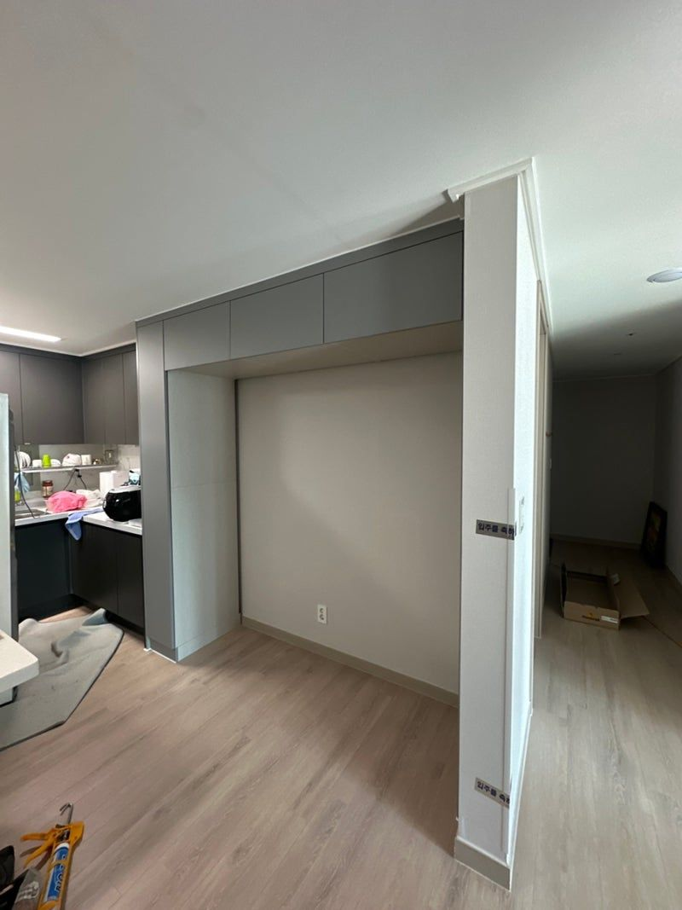

맞춤제작 현장으로 보는 순서
문자 한 통부터
키친핏 완성까지
냉장고장 옵션을 빼고 입주한 신축 아파트에 키친핏 냉장고장을 맞춤제작한 현장이에요. 실제 작업 순서 그대로 보여드려요. 칸막이 제거 리폼 순서는 작업 기록에서 볼 수 있어요.
- 1사진 · 지역 · 냉장고 모델
문자로 상담
냉장고 자리 사진과 시공 지역, 넣을 냉장고 모델명을 문자로 보내주세요. 렌지장, 홈바장처럼 같이 넣고 싶은 것도 함께 적어 주세요.
입주 전이에요. 냉장고장 옵션을 뺐는데 비스포크에 맞게 짜고 싶어요. 사진 보내요!
모델명 확인했어요. 설치 가이드에 맞춰 실측 날짜 잡아드릴게요.
- 2설치 가이드까지 확인해요
실측과 설계
현장을 직접 재고, 냉장고 설치 가이드를 보고 높이와 깊이, 도어 두께까지 맞춰 설계해요.

- 3현장에서 자르지 않아요
재단과 사전 제작
들어갈 판재는 치수에 맞게 미리 재단해서 가져가요. 그래서 시공 날 먼지와 시간이 줄어요.

- 4수평부터 잡아요
프레임 세우기
양옆 기둥장부터 세우면서 수평과 수직을 맞춰요. 매일 여닫는 가구라 여기서 품질이 갈려요.

- 5남는 공간까지 수납으로
상부장·키큰장 짜기
냉장고 높이에 맞춰 상부장 공간을 최대한 살리고, 남는 폭은 키큰장으로 채워요.

- 6색상까지 맞춰요
문짝과 마감
문짝을 달고 주방 가구 색상에 맞춰 마감해요. 상부와 양옆 틈새도 이어서 공간 낭비 없이 정리해요.

- 7키친핏으로 딱 맞게
완성
냉장고를 넣으면 도어 라인과 가구가 나란히 떨어지는 키친핏이 나와요. 처짐과 기울어짐은 평생 AS로 책임져요.